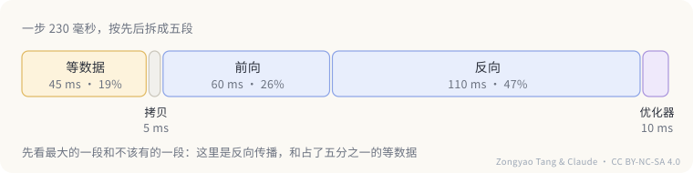

线索是：最常看的“GPU 利用率”其实量的不是效率 → 真正的目标是吞吐 → 吞吐还要和硬件的上限比，这就是 MFU → 任何数字都要建立在可复现的基线上 → 最后把一步的时间拆开，看每一段各占多少。
第 0 部分 · 全景与度量0.2 度量语言：利用率、吞吐与 MFU
这一单元回答怎么知道一次训练跑得“好不好”？该看哪个数字？
承接 0.1：知道了管道长什么样，接下来要会量它。量错了，后面所有的优化都可能是白费力气。
- GPU 利用率量的是“有没有在忙”，不是“忙得值不值”
- 目标是吞吐：每秒处理多少样本、多少 token
- MFU：实际用上了硬件峰值算力的百分之几
- 先有一个可复现的基线，才谈得上优化
- 把一步的时间拆开：每一段各占多少
讲解
1GPU 利用率量的是“有没有在忙”，不是“忙得值不值”
nvidia-smi 显示的 GPU 利用率，含义是：过去一小段采样时间里，GPU 上有 kernel 在执行的时间占百分之几。它不管这个 kernel 用了多少运算单元，也不管它算得有没有用。
这个数字的定义很窄：驱动每隔一小段时间采样一次，看这段时间里“至少有一个 kernel 在运行”的时间比例。
由此可以直接推出它的三个盲区：
- 一个很小的 kernel 也算“在忙”。 一个只用了 1% 运算单元的 kernel 连续不断地跑，利用率是 100%。
- 带宽受限也算“在忙”。 kernel 在执行，但运算单元大部分时间在等数据从显存送来，利用率还是 100%。
- 无用功也算“在忙”。 重复的计算、可以融合却没有融合的中间读写，都计入利用率。
反过来，它能可靠地告诉你一件事：如果利用率明显低于 100%，说明有一部分时间 GPU 上什么都没在跑，也就是 0.1 里说的“等数据”“等发令”或“等别的卡”。这是它唯一适合回答的问题。
还要小心这个数字本身的测量方式。它是采样得到的平均值：如果监控系统每 5 分钟取一次平均，一段“半分钟满载、半分钟空闲”的锯齿就会被抹平成 50%，看不出规律；如果采集有缺失而系统把缺失补成 0，还会凭空出现“利用率为 0”的时段。分析之前，先弄清你看到的曲线是怎么采出来的。
排查：三种典型的利用率曲线各说明什么
用每秒一次的采样看一两分钟（
nvidia-smi dmon或nvidia-smi --query-gpu=utilization.gpu --format=csv -l 1），曲线的形状比平均值有用得多。锯齿形：一会儿接近 100%，一会儿掉到很低，有规律地重复。
最常见的原因是数据供给跟不上：GPU 算完一个 batch，下一个还没到。检查 DataLoader 的 worker 数量、CPU 是否占满、存储读取速度。如果周期很长（几十秒一次），看看是不是在定期做验证、存检查点或写日志。长期稳定在中等水平，比如 40%–60%。
说明 GPU 的活是断断续续发过来的，每次都很短。常见于模型由大量小算子组成、时间花在 Python 和框架调度上（等发令）。加大 batch 如果吞吐几乎成比例上升，就确认了这一点。一直接近 100%，但训练仍然慢。
利用率在这里已经不提供信息了。要改看吞吐和 MFU（下面两节），再用 profiler 找出最耗时的 kernel。多卡时：所有卡同步地周期性下降。
多半和梯度同步有关：每一步同步时大家都在等。对比单卡的吞吐，算出扩展效率。如果只有某一张卡的曲线和别人不同，重点查那张卡和它的链路。两个容易被忽略的干扰：用很高的频率轮询 nvidia-smi 本身会影响采样结果；在容器里或云平台的监控面板上看到的数字，可能经过了聚合，先确认它的采样间隔。
打个比方像看一家店“有客人的时间占比”：一整天都有一位客人坐着，占比就是 100%，可这家店也许一百张桌子只坐了一张。
所以利用率低一定有问题（GPU 在空等），但利用率高不代表没问题。它只能用来发现“GPU 在等”，不能用来证明“GPU 用得好”。
- 既然利用率不能代表效率，那该看什么？回到训练的目的本身。
2目标是吞吐：每秒处理多少样本、多少 token
训练要的是“单位时间完成多少有效的工作”，也就是吞吐：每秒多少个样本，或者每秒多少个 token。所有优化最终都要落在这个数字上。
吞吐的好处是它直接对应你关心的结果：训练完这些数据要多少小时、要花多少钱。吞吐翻倍，训练时间就减半。
用吞吐时要注意三点。
单位要选对。 语言模型用 token 每秒，因为每个样本长度不同；图像模型用样本每秒。多卡时要说清是每张卡的还是全部加起来的。
要测稳定状态。 开头几步包含模型加载、编译、缓存预热，比稳定后慢很多。跳过开头，取中间一段的平均。
吞吐不是唯一要守住的数字。 有些“提速”其实是换来的：
- 减小了 batch 或序列长度，每步快了，但每步处理的数据也少了；
- 降低了精度，速度上去了，模型效果却变差了；
- 省掉了某些计算，显存却超了。
所以一次完整的记录至少包括四样：吞吐、MFU、峰值显存、模型效果（损失或评测指标）。四样放在一起看，才知道这次改动是真的赚了，还是只是挪了位置。
打个比方评价一家工厂看的是每天出多少合格的产品，而不是机器的开机率。
所以报告任何一次优化，都要给出优化前后的吞吐；同时记下峰值显存和模型效果，确认速度不是用别的东西换来的。
- 吞吐是个绝对数字：每秒 10 万 token 算快还是慢？要回答这个问题，得有一把尺子。
3MFU：实际用上了硬件峰值算力的百分之几
MFU（Model FLOPs Utilization）= 训练实际完成的有效运算速度 ÷ 硬件理论上的峰值运算速度。它回答的是：这块 GPU 能做的事，你用上了多少。
计算 MFU 需要两个数。
分子：训练实际需要的运算速度。 对 Transformer 有一个好用的估算：每处理 1 个 token，前向加反向大约需要 6N 次浮点运算，N 是参数个数。（前向时每个参数参与一次乘加，约 2N；反向要算对激活值和对权重的两份梯度，约 4N。）所以实际运算速度 ≈ 6N × 每秒处理的 token 数。
分母：硬件的峰值运算速度。 显卡规格里的 TFLOPS。要选和你使用的精度对应的那个数：用 bf16 训练，就用 Tensor Core 的半精度峰值。
两者相除就是 MFU。注意分子只算“模型本身需要的运算”，不管你实际让 GPU 做了多少。所以重复计算、无用功都不会抬高 MFU，这正是它比利用率诚实的地方：利用率量“GPU 忙不忙”，MFU 量“忙出了多少成果”。
怎么看这个数字：
- PaLM 论文报告的 MFU 是 46.2%，这在大模型训练里算很好的水平。
- 永远到不了 100%，因为模型里有很多带宽受限的算子（归一化、激活函数），还有数据加载、通信这些不做浮点运算的环节。
- 如果只有个位数，问题通常不在 kernel，而在管道的其他段：数据、发令、通信。
MFU 也有它的盲区。多卡训练时，为了让通信和计算重叠而做的调整，可能让单步的 MFU 下降，整体吞吐却上升。所以 MFU 和吞吐要一起看，目标始终是吞吐。
动手：给自己的训练算一次 MFU
以 124M 参数的 GPT-2、在一张 A100 上用 bf16 训练为例。
第一步：量出吞吐。 跳过开头的预热，取稳定后的一段。假设每步处理 16 × 1024 = 16384 个 token，每步耗时 0.11 秒（计时前后都同步过，见 3.1 的计时方法），吞吐 = 16384 ÷ 0.11 ≈ 14.9 万 token/秒。
第二步：算分子。 每个 token 约 6N = 6 × 1.24×10⁸ = 7.44×10⁸ 次运算。实际运算速度 = 7.44×10⁸ × 1.49×10⁵ ≈ 1.11×10¹⁴ 次/秒，也就是 111 TFLOPS。
第三步：查分母。 A100 用 Tensor Core 做半精度运算的峰值是 312 TFLOPS。
第四步：相除。 MFU = 111 ÷ 312 ≈ 36%。
几个要注意的地方：
- 6N 是近似。它忽略了注意力里和序列长度平方有关的那部分运算，序列很长时会低估；也忽略了词嵌入表（查表不算乘法），小模型里会高估。要更准，可以用工具（如
fvcore或torch.utils.flop_counter）数出前向的运算次数再乘 3。 - 分母要和精度匹配。如果实际跑的是 fp32 而你用了半精度的峰值做分母，MFU 会被严重低估。
- 多卡时，分子用所有卡的总吞吐，分母用所有卡的峰值之和。
算出这个数之后，把它和吞吐、峰值显存一起记下来。以后每做一次优化，这三个数就是比较的基准。
打个比方像一条设计时速 300 公里的高铁线路，实际平均时速 120 公里：MFU 就是 40%。它告诉你还有多大空间，也提醒你有些差距是免不了的。
所以吞吐告诉你“现在多快”，MFU 告诉你“还能快多少”。大模型训练做得好的，MFU 在四五成；如果只有百分之几，说明有基本的问题没解决。
- 吞吐和 MFU 都是量出来的。量的方法不对，再好的指标也没有意义。
4先有一个可复现的基线，才谈得上优化
基线是一组固定条件下、能重复测出来的数字。没有它，你无法判断一次改动是变好了、变坏了，还是只是测量的波动。
一个可信的测量要做到下面几点。
固定输入。 用同样的 batch 大小、同样的序列长度。最好用一个固定的 batch 反复喂，把数据加载的影响先隔离出去；需要评估数据管线时，再单独测它。
预热。 前几步包含一次性的开销：加载库、分配显存、torch.compile 的编译、缓存变热。这些不能算进稳定状态的性能。
同步后再计时。 GPU 是异步执行的，CPU 发出任务就返回了。不先等 GPU 把活干完就停表，量到的只是“下单”的时间（3.1 会细讲）。
多次测量，看波动。 跑几十步取平均，同时看最快和最慢的差距。如果两次运行之间本身就有 5% 的波动，那么一次“提升了 3%”的优化就说明不了什么。
记录环境。 显卡型号、驱动和 PyTorch 版本、精度设置、是否开了编译。几周后想复现时，这些就是依据。
有了基线之后的工作方式很简单：改一处 → 用同样的方法测 → 和基线比 → 记下来。慢，但每一步都站得住。跳步骤看起来快，一旦结果和预期不符，就得全部退回去重查。
打个比方像称体重：每次都在早上空腹、用同一台秤称，前后的数字才能比较。
所以每次只改一处，用同样的方法再测一遍，和基线比。改了三处才测一次，就不知道是哪一处起的作用。
出处Best Practices §8.1 计时- 基线给了你一个总数。总数只能告诉你“快还是慢”，要知道“慢在哪”，得把它拆开。
5把一步的时间拆开：每一段各占多少
一步训练的总时间 = 等数据 + 拷贝 + 前向 + 反向 + 梯度同步 + 优化器 + 其他。把总时间拆到这些段上，哪一段最大，就先看哪一段。
拆分时间有粗细两种做法，先粗后细。
粗拆：自己打点。 在训练循环里几个关键位置同步后记时间：取到 batch 之后、拷到 GPU 之后、前向之后、反向之后、优化器之后。相邻两点的差就是那一段的耗时。这样十几行代码就能得到一张表，比如：
- 等数据 45 毫秒
- 拷贝 5 毫秒
- 前向 60 毫秒
- 反向 110 毫秒
- 优化器 10 毫秒
一眼就能看出：等数据占了五分之一，值得先看；优化器只占 4%，优化它没有意义。

粗拆之后的样子（数字是讲解里的例子） （为了打点而加的同步会让程序变慢，因为它打断了 CPU 和 GPU 的重叠。所以这种测法只用来看各段的比例，测总吞吐时要去掉。）
细拆：用 profiler。
torch.profiler会记录每个算子在 CPU 和 GPU 上各花了多少时间，还能画出时间线，看到 GPU 上哪里有空白、空白的时候 CPU 在干什么。3.1 会具体讲怎么读它的输出。拆完之后，对着 0.1 的管道图做三件事：
- 找最大的一段。它决定了优化的上限：一段占总时间的 20%，把它优化到零，整体也只快 25%。
- 判断它属于哪种“等”（等数据、等计算、等发令、等别的卡）。
- 到课程对应的部分找手段，改完再拆一次。瓶颈消除后，下一个最大的段会浮出来。
这就是性能工作的全部循环：量总数 → 拆开 → 找最大的 → 改 → 再量。
打个比方像查家里的电费：总数高没有用，得知道空调、热水器、冰箱各用了多少，才知道该从哪里省。
所以 profiler 的作用就是做这件拆分。拆完之后，回到 0.1 的管道图，看最大的那一段属于哪种“等”，再去对应的部分找办法。
串起来
GPU 利用率只说明 GPU 有没有在忙，不说明忙得值不值；吞吐才是目标；MFU 告诉你离硬件上限还有多远；这些数字要在可复现的基线上测；最后把时间拆到管道的每一段，才知道该优化哪里。
考考自己
不看讲解，用自己的话讲一遍。
- nvidia-smi 的 GPU 利用率到底测的是什么？为什么 100% 不代表高效？
- 为什么优化目标应该是吞吐而不是利用率？除了吞吐，还应该同时记录什么？
- MFU 是怎么定义的？它和 GPU 利用率的区别在哪里？
- 测量训练性能时，怎样才算一个“可复现的基线”？
- 怎样把一步训练的时间拆到管道的各段上？拆开之后怎么用？
术语
- utilization
- 利用率
- throughput
- 吞吐
- MFU
- 模型浮点运算利用率
- baseline
- 基线
- profiler
- 性能分析器